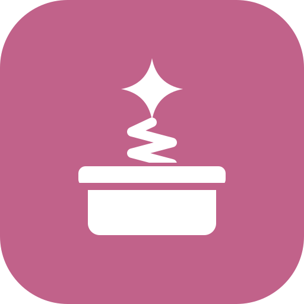

장난감 상자
🎟️
제비뽑기
n장 중 k장 당첨, 한 장씩 뒤집어요
🖥️ 큰 화면에 띄워도 좋아요
🎡
룰렛
항목을 적고 돌려요, 자주 쓰는 목록은 저장
🖥️ 큰 화면에 띄워도 좋아요
🪜
사다리타기
이름과 결과를 적고, 이름을 누르면 길을 따라 내려가요
🖥️ 큰 화면에 띄워도 좋아요
💣
폭탄 돌리기
언제 터질지 모르는 폭탄을 옆 사람에게 넘겨요
📱 폰 한 대로
🔮
타로
질문을 떠올리고 펼친 카드에서 직접 골라 한 장씩 뒤집어요
📱 폰 · 🖥️ 큰 화면 둘 다
☕
주문 모으기
메뉴판 사진을 찍고, 메뉴마다 추가를 눌러 바를 정으로 세요
📱 폰 한 대 돌리기
🎄
크리스마스
초대장 · 포트럭 메뉴 신청 · 시크릿 산타 · 선물 주인 맞히기 · 선물 뺏기 · 초성 퀴즈 · 몸으로 말해요 · 누가 썼을까
🎅 준비부터 당일까지
🗳️
투표
글 항목이나 날짜로 투표를 만들고, 링크를 나눠 각자 투표해요
📱 링크 · QR로 각자 폰에서